Naviga sulla MAPPA, cerca per TIPOLOGIA e AUTORE e DATA
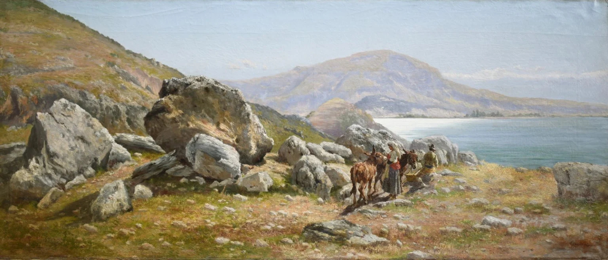
Aurelio Tiratelli1875
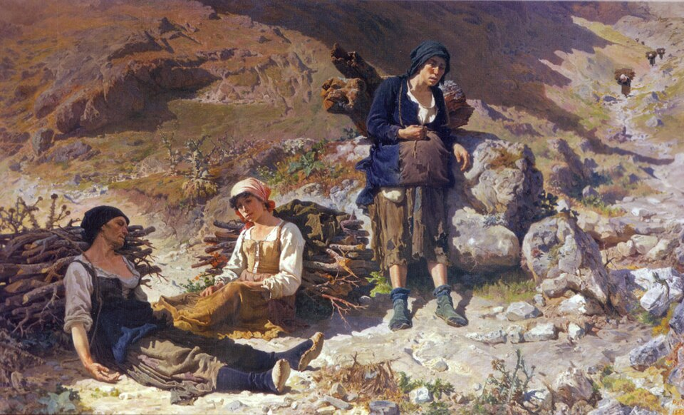
Teofilo Patini1886
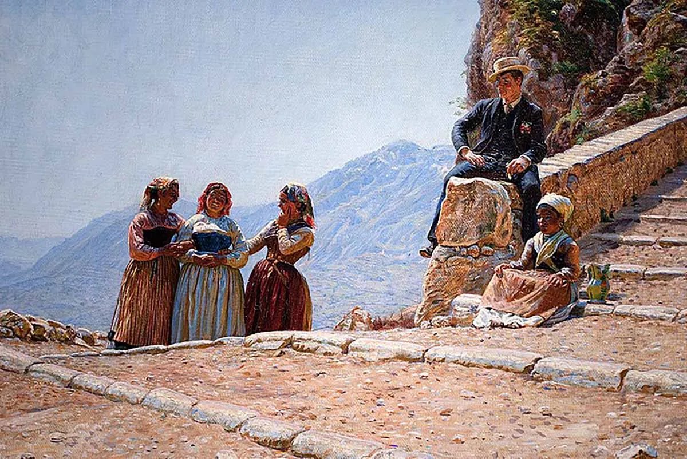
Kristian Zahrtmann1889
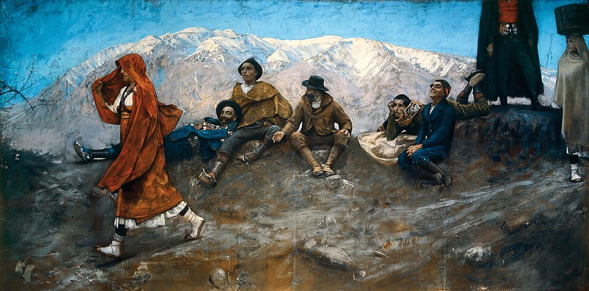
Francesco Paolo Michetti 1895
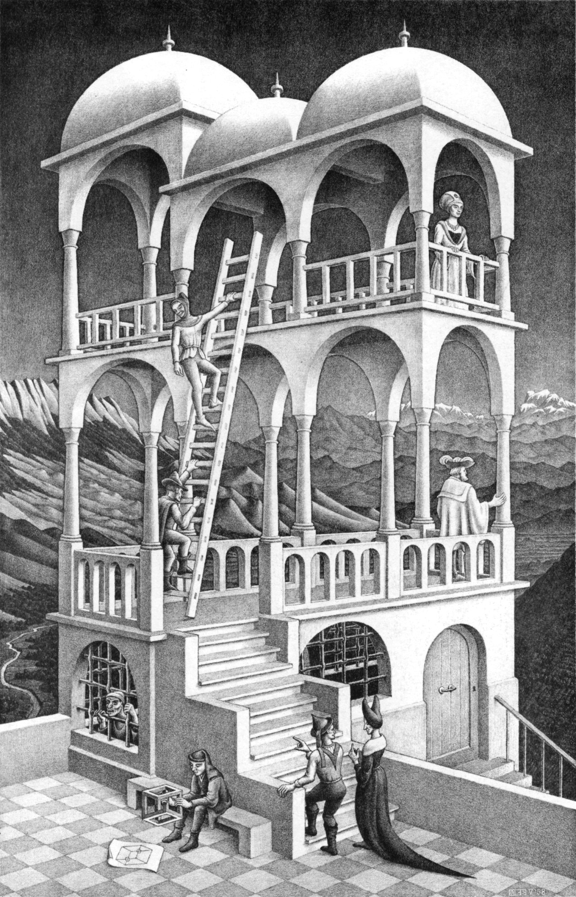
M.C.Escher 1858
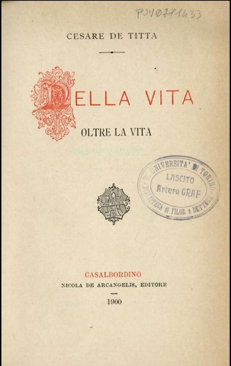
Cesare De Titta 1900
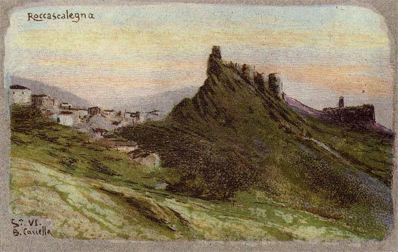
Basilio Cascella 1902
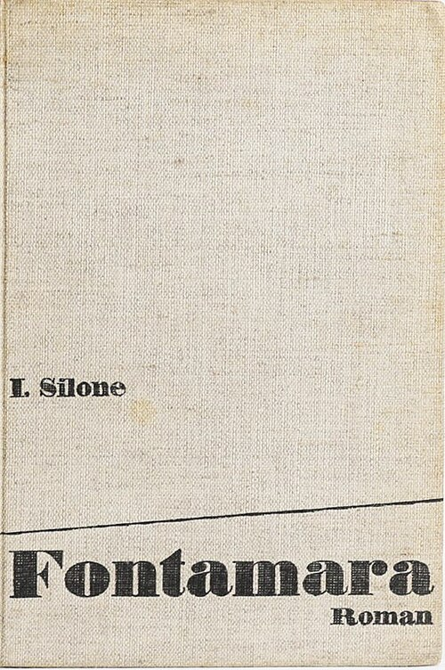
Ignazio Silone1930
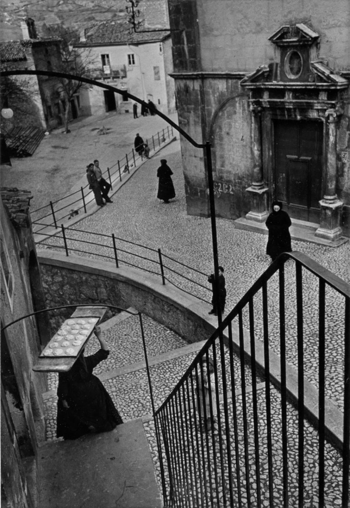
Henri Cartier-Bresson1951
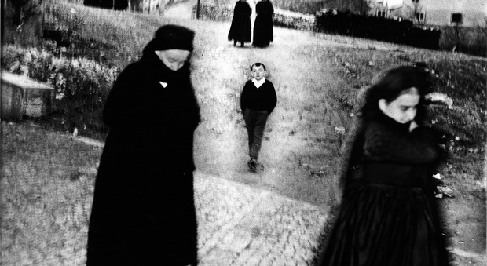
Mario Giacomelli1964
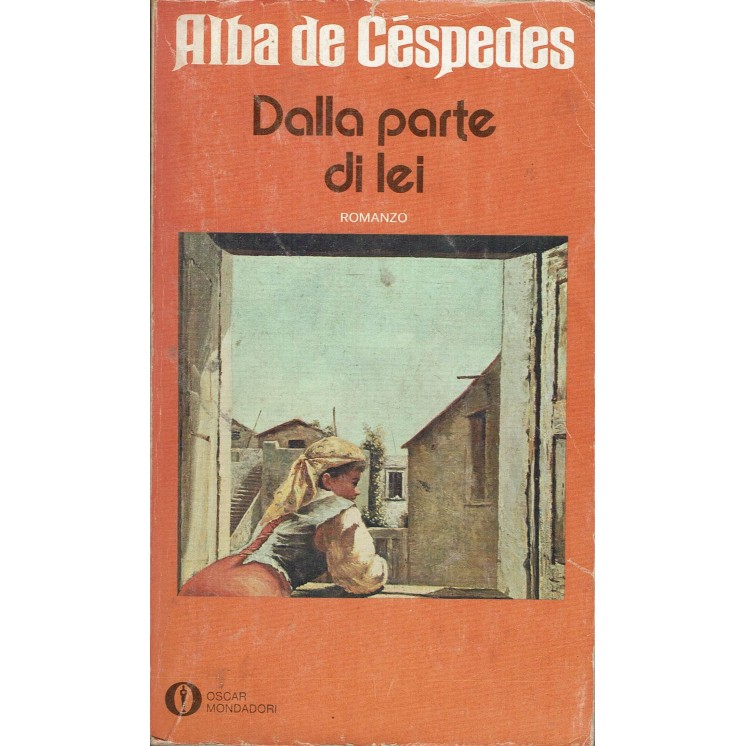
Alba de Cespedes1949
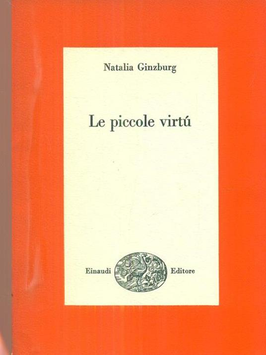
Natalia Ginzburg1962